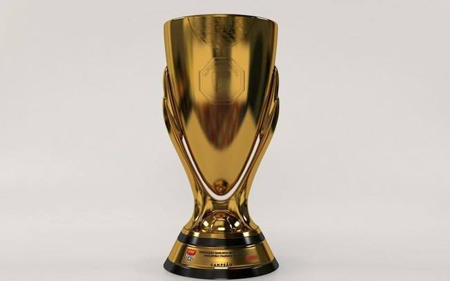

Site do Corinthians
MENU


O Corinthians é um time localizado no estado de São Paulo,
no qual pratica o esporte chamado futebol, com uma das
maiores torcidas do mundo, o clube tem uma das melhores
infraestruturas do Brasil, na qual seus jogadores e
torcedores desfrutam da melhor tecnologia para torcer
e se exercitar.
Video Neo Quimica Arena (Estádio)
Corinthians 6 x 1 São Paulo
O time do Corinthians ja era campeão do Brasileirão
daquele ano, por isso entrou para jogar contra o rival
apenas com jogadores reservas, e mesmo assis, diante da
sua torcida, fez 6x1 no São Paulo
Corinthians 3 x 2 Palmeiras
O Timão precisava vencer o jogo para afastar qualquer
risco de perder o titulo para o rival, com isso o clima era
de tensão, mas o Cotinhians conseguiu o grande resultado,
se consagrando praticamente campeão brasileiro
Corinthians 2 x 0 Atletico MG
Após perder por 2x0 fora de casa, o Timão precisava
do resultado para se classificar na Copa do Brasil,
e mais uma vez, diante da toricida, o time consegui o
resultado, e se classificou nos penaltis.
Principais títulos do Corinthians
- Brasileirao - 7x
- Copa do Brasil - 3x
- Libertadores - 1x
- Mundial - 2x 
- Paulistão - 30x


Hino do Corinthians
Sobre: O 'Campeão dos Campeões' é o hino que embalou as maiores conquistas do
Corinthians
em toda sua
história.
Desde a oficialização da canção como hino oficial em 1953, o Timão ganhou vários títulos de primeiro
escalão
como dois Mundiais de Clubes da Fifa, uma CONMEBOL Libertadores, uma Recopa Sul-Americana, sete
Brasileirões e
três Copas do Brasil.
Sites externos
SITE DO CORINTHIANSINGRESSOS CORINTHIANS
SOCIO TORCEDOR DO CORINTHIANS